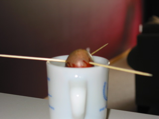

So, the last time I bought an avocado, and made guacamole, I looked at that huge pit, and wondered if it would grow. Much to my delight, sources on line say that yes it will. So I followed the steps, and this is what I've got so far.
I'll Update this page as things happen. (if they happen).
Day Zero
Poked with toothpicks and in water.
Day Twelve
Refreshing the water every week, but no changes yet.

Day Ninety
Refreshed the water every week, no changes until the final week. Then I noticed a nice big wad of clear-ish slime mold. Didn't bother with a picture, just tossed it out. So either I didn't do something right, or I got a dud. Oh well, maybe try another time.